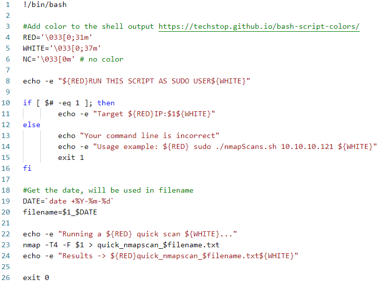

Scripting - Bash og powershell
Overordnede læringsmål fra studie ordningen
Viden
Den studerende har viden om og forståelse for:
- Grundlæggende programmeringsprincipper
Færdigheder
Den studerende kan supportere løsning af sikkerhedsarbejde ved at:
- Anvende primitive og abstrakte datatyper - Læse andres scripts samt gennemskue og ændre i dem
Kompetencer
Den studerende kan:
- Håndtere mindre scripting programmer set ud fra et it-sikkerhedsmæssigt perspektiv
Læringsmål den studerende kan bruge til selvvurdering
- Den studerende ved hvad scripting i hhv. Bash og Powershell er
- Den studerende kan forstå og implementere et simpelt bash script, samt omskrive det til et powershell script med samme funktionalitet
- Den studerende kan anvende variabler, CLI parametre, kontrolstrukturer og løkker i forbindelse med bash og powershell scripts
Forberedelse
- Læs undervisningsplanen og øvelser
- Læs kapitel 6 – Praktisk kryptografi, i "IT-Sikkerhed i praksis".
- Se video om Bash Scripting Nullbyte: Write Your Own Bash Scripts for Automation
- Se video om Powershell John Hammond: PowerShell playliste
Opgave - THM: Bash scripting
Jeg gennem gik TryHackMe's bash room
Det kan ses her
Opgave - Forstå bash script + tilrette script
Opgave beskrivelse
-
Diskuter nedenstående script med dit team. Hvad sker der på hver linje i dette script? – I skal snakke det igennem FØR I kører koden. Ideen er at forstå koden.
-
Implementer dette script i din linux VM. Når du har fået det til at virke, så tilret således nmap resultatet ikke skrives til en fil, men at alle de åbne porte printes direkte i konsolvinduet (uden anden output).

- Hvad gør koden?
- Linje 1: er et shbang som forteller scriptet at det skal køre med bash.
- Linje 4-6: Der bliver defineret nogle farver som senere bliver brugt i
echooutputs. - Linje 8: her bliver det brugt en
echokommando med flaget-esom betyder-e enable interpretation of backslash escapes. Det skal bruges for at få farven til at virke. Inde i den string som skal outputtes kalder man variablerne$(red)og$(white), Det er sådan det bliver farvet. alt efter en valgt farve bliver den farve, ind til en ny farve bliver defineret. - Linje 10: Der bliver tjekket om alle agrumenterne til sammen er 1, hvis ja printer den
Target IP: XXX.XXX.XXX.XXX. Hvis ikke betyder det at dette script blev kørt uden at give et argiment, og derfor printer den hvordan man skal bruge scriptet. - Linje 19: definer en dato.
- Linje 20:
filenameer lig med ip adressen som givet i argumentet, plus datoen. - Linje 22: print til terminal
- Linje 23: kør en nmap scanning, med flagene
-F: Fast mode - Scan fewer ports than the default scanog-T<0-5>: Set timing template (higher is faster)Det bliver så skrevet til en fil. - Linje 26: programmet stopper sig selv.
-
Implementer dette script i din linux VM. Når du har fået det til at virke, så tilret således nmap resultatet ikke skrives til en fil, men at alle de åbne porte printes direkte i konsolvinduet (uden anden output).
-
Først så er der fejl i koden. Linje 19 med date skal se sådan ud
DATE=$(date +%Y-%m-%d)Dette vil gøre at komandoen date bliver kørt og dets output gemt i variabletDATE. Ellers ville det bare være en string. Jeg har skrevet koden uden alt det med farver.1 2 3 4 5 6 7 8 9 10 11 12 13 14 15 16 17 18 19 20 21 22
#!/bin/bash set -x echo "RUN THIS SCRIPT AS A SUDO USER" if [ $# -eq 1 ]; then echo "Target IP: $1" else echo "Your command line is incorrect" echo "Usage example: sudo ./nmapscan.sh 10.10.10.40" exit 1 fi DATE=date +%Y-%m-%d filename="$1_$DATE.txt" touch $filename echo "Running a quick scan..." nmap -T4 -F $1 > "$filename" echo "Look in $filename" exit 1Resultatet fra output filen
10.10.2.2_2025-10-08.txtStarting Nmap 7.95 ( https://nmap.org ) at 2025-10-08 04:12 EDT Nmap scan report for 10.10.3.10 Host is up (0.046s latency). Not shown: 996 closed tcp ports (reset) PORT STATE SERVICE 80/tcp open http 3000/tcp open ppp 8800/tcp open sunwebadmin 8899/tcp open ospf-lite Nmap done: 1 IP address (1 host up) scanned in 0.91 seconds -
Her bruger jeg
printf,awkogcuttil at manipulere outputtet fra nmap.printfer en måde at printe "pænt" virker lige somecho. Jeg printer så outputtet franmappiper det ind iawk, som kigger efter/tcp, derefter printer den så den første del som matcher, hvilket er alt til og med/tcppå en linje (Hvis en linje ikke har/tcpså bliver den sorteret fra). Jeg bruger såcutmed-d/som betyder at den splitter linjen ved et/og-f1betyder at den skal printe de første del, som så er port nummeret.1 2 3 4 5 6 7 8
#!/bin/bash output=$(nmap $1) printf '%s\n' "$output" | awk '/\/tcp/ {print $1}' | cut -d/ -f1 exit 1Dets output ser sådan ud:
80 3000 8800 8899
-
Opgave - Powershell basics
Opgave beskrivelse
- Lav så meget som muligt af Automate administrative tasks by using PowerShell https://docs.microsoft.com/en-us/learn/paths/powershell/
- Dan dig et overblik over hvad du kan finde i den officielle dokumentation https://docs.microsoft.com/en-us/powershell/scripting/how-to-use-docs?view=powershell-7.2
Man kan finde den officielle dokumentation her. Ellers så søg på nettet, brug stackoverflow og andre ligende sider.